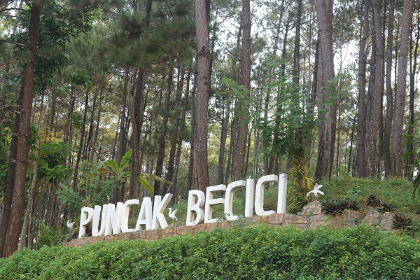
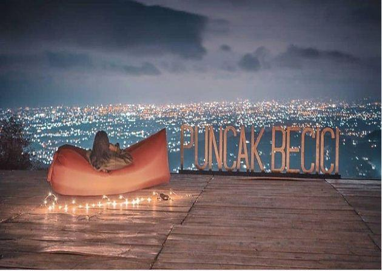

Puncak Pinus Becici
 Puncak Pinus Becici atau Puncak Becici merupakan objek wisata bergaya alam andalan Kabupaten Bantul, DI Yogyakarta. Wisata ini terletak di Desa Muntuk, Kecamatan Dlingo, Kabupaten Bantul, Daerah Istimewa Yogyakarta. Di tempat wisata puncak becici ini kamu bisa menikmati hamparan perbukitan yang banyak ditumbuhi pohon pinus yang mempesona. Selain itu dibagian utara Puncak Becici ini kamu juga bisa melihat betapa megahnnya Candi Prambanan, dan dibagian selatannya kamu bisa melihat hamparan laut pantai selatan dan juga Gunung Merapi & Gunung Sindoro. Menurut cerita yang beredar di masyarakat sekitar nama Becici ini berasal dari kata ambeg yang berarti berdiam diri & suci, maka tak heran jika di Puncak Becici ini kamu bisa menemukan sebuah petilasan. Petilasan ini dikabarkan oleh warga merupakan persemayaman putra Pendiri Desa Munthuk yang menghabiskan hidupnya untuk bertapa di tempat tersebut, maka dari situlah tempat ini dinamakan sebagai Puncak Becici atau Puncak Suci.
Fasilitas Puncak Becici ini sudah lumayan lengkap bagi para pengunjung yang ingin pergi ke Puncak Becici, fasilitas yang tersedia diantaranya adalah: